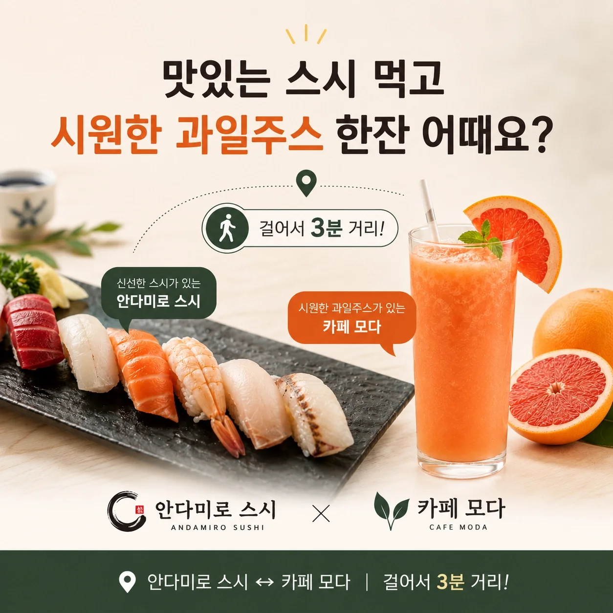
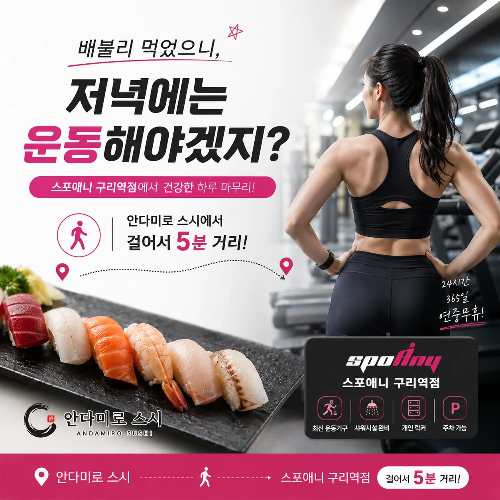
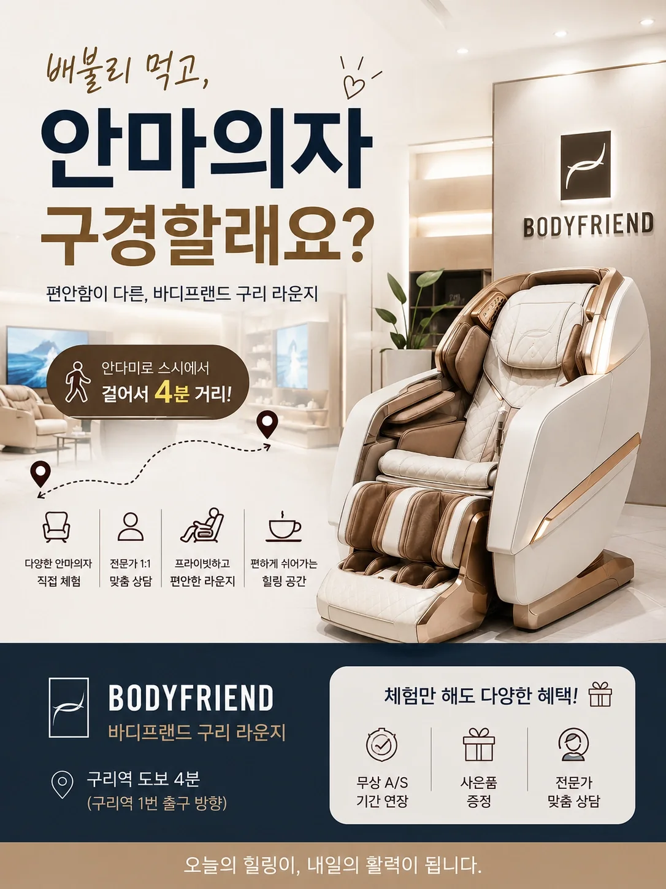

이미 구리에 있는 고객
온라인의 불특정 사용자가 아니라 안다미로 스시를 방문한 고객에게 노출됩니다.
카페, 운동, 교육, 체험형 매장처럼 식사 전후에 함께 찾을 수 있는 업종과 잘 연결됩니다.
온라인의 불특정 사용자가 아니라 안다미로 스시를 방문한 고객에게 노출됩니다.
고객이 지금 이동할 수 있도록 거리와 방문 이유를 함께 보여줍니다.
“커피 한잔”, “운동”, “체험”처럼 현재 상황에 자연스러운 메시지를 만듭니다.
두레가 가게 정보, 거리, 대표 혜택과 상황에 맞는 메시지를 모바일 소개 콘텐츠로 구성합니다.

식사 후 카페를 찾는 고객에게 자연스럽게 제안합니다.

식사와 운동을 연결하는 상황형 메시지를 사용합니다.

가까운 체험형 매장의 방문 이유를 명확히 보여줍니다.
최소 3개월부터 시작하며, 두레가 홍보 콘텐츠 제작을 지원합니다.